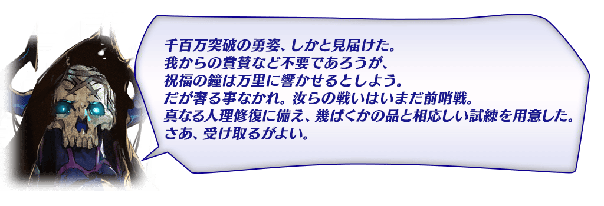
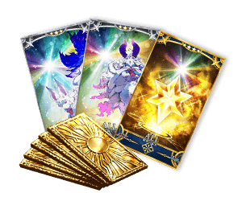
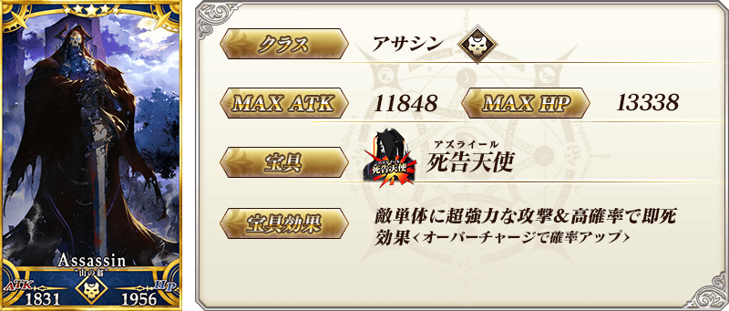
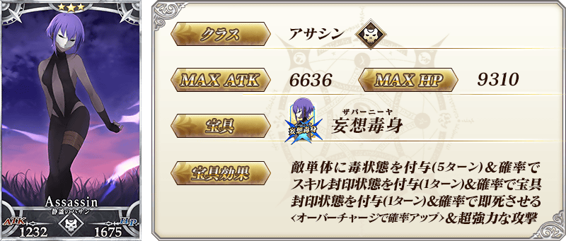
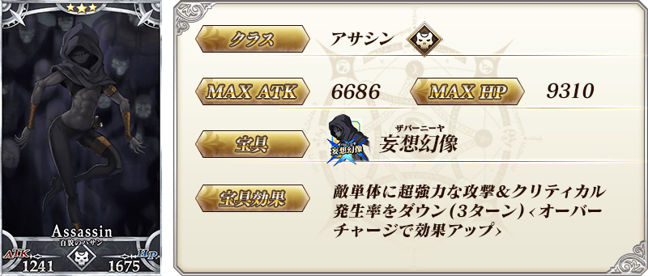
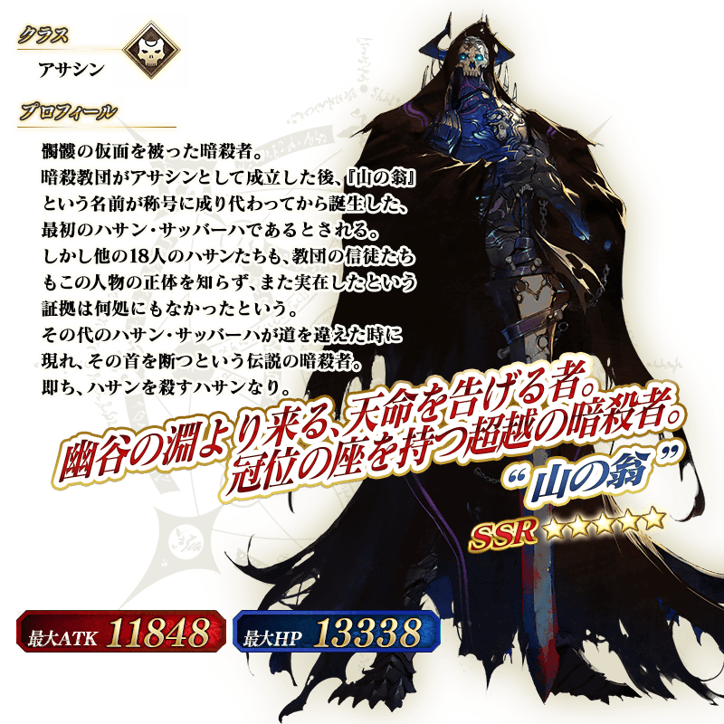

◆舉辦期間◆
2017年11月22日(三) 17:00～11月29日(三) 11:59
|
為了記念「1100萬DL突破宣傳活動」舉辦實施特別登入獎勵。 ◆舉辦期間◆ |
 |
| 連續登入天數 | 贈送內容 | |
|---|---|---|
| 第1天 | 白銀的果實 10個 | |
| 第2天 | 黄金的果實 10個 | |
| 第3天 | 1,000萬QP | |
| 第4天 | 叡智的猛火 ALL★4(SR) 10枚 | |
| 第5天 | 英靈結晶・星之芙芙ALL★3(HP) 10枚 | |
| 第6日目 | 英靈結晶・太陽之芙芙ALL★3(ATK) 10枚 | |
| 第7天 | 呼符 10張(聖晶石召喚10次份) | |
※第1天的登入獎勵會從11月23日(四) AM3:00配發。
※之後的登入獎勵會在每天AM3:00配發。
※連續登入天數中斷的話，無法領取之後的禮物。
※最多能領取7次，但根據開始遊戲的時間點，可能無法到此上限。
|
舉辦期間中達成在「Master任務」內追加任務「【1100萬DL突破記念】通過終局特異點」的話，贈送聖晶石30個！ ◆贈送對象◆ ◆舉辦期間◆ ◆領取期間◆ |
 |
※在舉辦期間前就通過「終局特異點」的情況，會自動顯示為任務達成的狀態。
※請注意與每週日23:00更新的普通任務(Weekly)不同欄位，舉辦期間與領取期間有所差異。超過領取期間過的話無法入手報酬。
※通過「【1100萬DL突破記念】通過終局特異點」也不會計算在普通任務(Weekly)的任務進行度。
另外，今後以主線關卡第1.5部「Fate/Grand Order - Epic of Remnant -」為首，也包含期間限定活動和期間限定宣傳活動，預定將開放條件定為通過主線關卡第1部。無論如何，如果推進主線關卡第1部的攻略會有所幫助。
現在永久舉辦的AP消耗量1/2狀態，再追加AP消耗量1/2，主線關卡第1部(從特異點F到終局特異點)的AP消耗量以期間限定變為1/4！
◆舉辦期間◆
2017年11月22日(三) 17:00～11月29日(三) 11:59
◆對象關卡◆
主線關卡第1部(從特異點F到終局特異點)
※請注意自由關卡為對象外。
※在戰鬥中撤退的情況AP的消耗也是1/4。
主線關卡亞種特異點(從Ⅰ到Ⅲ)的AP消耗量以期間限定變為1/2！
◆舉辦期間◆
2017年11月22日(三) 17:00～11月29日(三) 11:59
◆對象關卡◆
主線關卡亞種特異點(從Ⅰ到Ⅲ)
※請注意自由關卡為對象外。
※在戰鬥中撤退的情況AP的消耗也是1/2。
在進行Servant及概念禮裝的強化時，大成功(經驗值2倍加成)・極大成功(經驗值3倍加成)發生機率以期間限定變為2倍。
無論如何藉此機會強化中意的Servant和概念禮裝吧！
◆舉辦期間◆
2017年11月22日(三) 17:00～11月29日(三) 11:59
以期間限定在迦勒底之門內每日出現的關卡「種火集め」與「修練場」全種類開放。
◆舉辦期間◆
2017年11月23日(四) 23:00～11月29日(三) 11:59
◆對象關卡◆
【種火集め】
初級、中級、上級、超級
【修練場】
初級、中級、上級、超級
| 時間 | 種火集め | 修練場 |
|---|---|---|
| 11月22日(三) 23:00～ 11月29日(三) 11:59 |
・1100萬記念 月曜 種火集め＜槍・殺編＞ ・1100萬記念 火曜 種火集め＜剣・騎編＞ ・1100萬記念 水曜 種火集め＜弓・術編＞ ・1100萬記念 木曜 種火集め＜槍・殺編＞ ・1100萬記念 金曜 種火集め＜剣・騎編＞ ・1100萬記念 土曜 種火集め＜弓・術編＞ ・1100萬記念 日曜 種火集め＜隨機編＞ |
・1100萬記念 月曜 弓の修練場 ・1100萬記念 火曜 槍の修練場 ・1100萬記念 水曜 狂の修練場 ・1100萬記念 木曜 騎の修練場 ・1100萬記念 金曜 術の修練場 ・1100萬記念 土曜 殺の修練場 ・1100萬記念 日曜 剣の修練場 |
※關卡通過報酬的魔力稜鏡是只有初次通過時才可獲得。
※請注意以期間限定出現的「種火集め」及「修練場」跟平常每日出現的「種火集め」及「修練場」關卡有所差異，不會引繼「關卡情報」。
※舉辦期間中，關卡通過報酬不會重置。
【種火集め 關卡的難易度等】
| 難易度 | 推薦Lv | 消耗AP | 初次通過報酬 |
|---|---|---|---|
| 初級 | 5 | 10 | 魔力稜鏡 1個 |
| 中級 | 10 | 20 | 魔力稜鏡 2個 |
| 上級 | 25 | 30 | 魔力稜鏡 3個 |
| 超級 | 40 | 40 | 魔力稜鏡 4個 |
【修練場 關卡的難易度等】
| 難易度 | 推薦Lv | 消耗AP | 初次通過報酬 |
|---|---|---|---|
| 初級 | 10 | 10 | 魔力稜鏡 1個 |
| 中級 | 25 | 20 | 魔力稜鏡 2個 |
| 上級 | 40 | 30 | 魔力稜鏡 3個 |
| 超級 | 60 | 40 | 魔力稜鏡 4個 |
採用GoogleDrive資料夾呈現
下述的期間中，在「Master任務」內以期間限定追加「【1100萬DL突破記念】任務」。
◆舉辦期間◆
2017年11月22日(三) 17:00～11月29日(三) 11:59
◆領取期間◆
2017年11月22日(三) 17:00～12月10日(日) 22:59
| 任務名稱 | 任務達成報酬 |
|---|---|
| 【1100萬DL突破記念】 通過1次有「燃燒(炎上)」場景的自由關卡 |
11月交換券(2017) 1張 |
| 【1100萬DL突破記念】 通過1次「森」場景的自由關卡 |
11月交換券(2017) 1張 |
| 【1100萬DL突破記念】 通過1次「丘」場景的自由關卡 |
11月交換券(2017) 1張 |
| 【1100萬DL突破記念】 通過1次「城」場景的自由關卡 |
11月交換券(2017) 1張 |
| 【1100萬DL突破記念】 通過1次「荒野」場景的自由關卡 |
11月交換券(2017) 1張 |
| 【1100萬DL突破記念】 通過1次「砂灘・砂漠」場景的自由關卡 |
11月交換券(2017) 1張 |
| 【1100萬DL突破記念】 通過1次「水邊」場景的自由關卡 |
11月交換券(2017) 1張 |
| 【1100萬DL突破記念】 通過1次「岩山」場景的自由關卡 |
11月交換券(2017) 1張 |
| 【1100萬DL突破記念】 通過1次「草原」場景的自由關卡 |
11月交換券(2017) 1張 |
| 【1100萬DL突破記念】 通過1次「神殿」場景的自由關卡 |
11月交換券(2017) 1張 |
| 【1100萬DL突破記念】 通過2個通過自由關卡的記念任務 |
100萬QP |
| 【1100萬DL突破記念】 通過4個通過自由關卡的記念任務 |
200萬QP |
| 【1100萬DL突破記念】 通過7個通過自由關卡的記念任務 |
300萬QP |
| 【1100萬DL突破記念】 通過全部通過自由關卡的記念任務 |
400萬QP |
※請注意與每週日23:00更新的普通任務(Weekly)不同欄位，舉辦期間與領取期間有所差異。超過領取期間過的話無法入手報酬。
※通過「【1100萬DL突破記念】任務」也不會計算在普通任務(Weekly)的任務進行度。
※任務名記載「通過1次自由關卡」的情況，計算「通過1次」的條件為必須先將對象自由關卡的進行度達到入手初次通過報酬的階段，在入手後通過關卡。
請注意通過於進行度入手初次通過報酬前階段的對象自由關卡不會計算1次。
※根據主線關卡的進行度會有通過自由關卡的記念任務無法達成的情況。
※請注意做為任務達成報酬11月交換券(2017)的使用・領取期間與現在平常連續登入獎勵配發的11月交換券(2017)同様到2018年2月28日(三) 22:59。
|
以期間限定在達文西工房的「魔力稜鏡交換」追加下述的道具。 ◆交換期間◆ |
 |
| 追加道具 | 能交換次數 | 1次交換所需的 魔力稜鏡數 |
|---|---|---|
| 【期間限定】呼符 | 5次 | 20個 |
| 【期間限定】叡智的猛火ALL★4(SR)10枚套組 | 5次 | 40個 |
| 【期間限定】英靈結晶・星之芙芙ALL★3(HP) | 20次 | 15個 |
| 【期間限定】英靈結晶・太陽之芙芙ALL★3(ATK) | 20次 | 15個 |
在達文西工房的「稀有稜鏡交換」追加下述的新道具。
◆追加時間◆
2017年11月22日(三) 17:00～
|
★★★★★SSR |
| 追加道具 | 能交換次數 | 必需的 稀有稜鏡數 |
|---|---|---|
| 魔力稜鏡交換 「★5(SSR)カルデア・ランチタイム」 |
1次 |
1個 |
※追加到「稀有稜鏡交換」的魔力稜鏡交換「★5(SSR)カルデア・ランチタイム」為常駐，並無交換期限。
※關於「★5(SSR)カルデア・ランチタイム」的開放，只是開放在商店交換的權利，能交換張數限制及稀有稜鏡的交換數並無變化。。
關於已經交換過「★5(SSR)カルデア・ランチタイム」的玩家，只會開放未交換的數量。(交換過4張的情況只會開放1張量)

◆「1100萬DL記念Pick Up召喚」期間◆
期間:2017年11月22日(三) 17:00～12月6日(三) 11:59
舉辦期間限定「1100萬DL記念Pick Up召喚」！
為了記念1100萬DL突破「★5(SSR)“山之翁”」以期間限定登場！
另外，「★3(R)靜謐的哈桑」「★3(R)百貌的哈桑」Pick Up！
※“山之翁”在Pick Up期間結束後不會追加到故事召喚。
※靜謐的哈桑、百貌的哈桑在Pick Up期間結束後也可在故事召喚抽出。
詳情請在聖晶石召喚畫面左下的召喚詳細確認。
Pick Up期間中，期間限定Servant、Pick Up Servant的出現機率提升！
10次召喚中確定1張★4(SR)以上和確定1位★3(R)以上的Servant！
※確定★4(SR)以上包含Servant和概念禮裝。
※所謂「出現機率提升」意指比同稀有度的Servant及概念禮裝出現機率更高的設定。
介紹“山之翁”的寶具演出！
在Fate/Grand Order官方網站內的公告中，公開了「★5(SSR)“山之翁”」的寶具演出。敬請確認。




